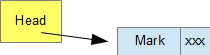
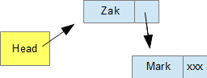

<div id="jsn-maincontent" class="span9 order1  row-fluid">
					<div id="jsn-maincontent_inner">
						<div id="jsn-centercol"><div id="jsn-centercol_inner">
									<div id="jsn-mainbody-content" class=" jsn-hasmainbody">
								<div id="jsn-mainbody-content-inner1"><div id="jsn-mainbody-content-inner2"><div id="jsn-mainbody-content-inner3"><div id="jsn-mainbody-content-inner4" class="row-fluid">
								
										
								
								<div id="jsn-mainbody-content-inner" class="span12 order1 ">
		
										<div id="jsn-mainbody">
										<div id="system-message-container">
	</div>

										<div class="item-page" itemscope itemtype="https://schema.org/Article">
	<meta itemprop="inLanguage" content="en-GB" >
	
		
						
		
	
	
		
								<div itemprop="articleBody">
		<p></p>
<h1 style="text-align: center;">Creating a linked list in Python</h1>
<p><strong class="NormalContentHeading" style="line-height: 1.5;">Introduction<br></strong>A linked list is a collection of data items that have positions relative to other data items in the list. The items can be in some kind of order, such as ascending or descending, or they can be unordered. We are going to use Python to create a simple linked list of unordered data items and then carry out some common operations on it. A linked list has a <em><strong>head</strong></em>, which is the start of the linked list and holds a pointer that points to the first <strong><em>node</em> </strong>in the list (or a <em><strong>null pointer</strong></em>, if the list is actually empty). A node holds two piece of information. The first piece of information is the actual data itself. The second piece of information is a pointer. This holds data that points to the next node. If there isn't a next node because it is the end of the linked list, then we will use a <em><strong>null pointer</strong></em> to signal this. Our null pointer will be shown by using <strong><em>xxx</em></strong>.&nbsp;</p>
 
<p><strong>Our approach to creating an unordered linked list</strong><br>There are a number of ways we can implement a linked list. To keep things nice and simple, we will always add new nodes to the beginning of the linked list. For example, suppose we want to create a linked list by first adding Mark, then adding Zak, then Chris and finally Sue. This is an unordered list in the sense that the data isn't in alphabetical order, for example. No thought has been given to a logical ordering of the data items.</p>
<p>We would create an empty list to start with. The head would contain the null pointer.</p>
<p></p>
<p>Then we add Mark.</p>
<p></p>
<p>Then we add Zak.</p>
<p>&nbsp;</p>
<p>Notice that Zak was inserted at the beginning of the queue. The pointer from the head was then changed so it pointed to Zak, and Zak's pointer was made to point at Mark. Now we need to add Chris.</p>
<p></p>
<p>Finally, we add Sue.</p>
<p></p>
<p><strong>The node class</strong><br>The first class we need is one to create node objects. A node will have two pieces of information, the data and the pointer. When we create a node, we will always assign the pointer to <strong><em>None</em> </strong>to begin with. Both the data and pointer need a get method, to retrieve the data, and a set method, to assign a new value. We also of course need a constructor method. Here is our node class.</p>
<p></p>
<p><strong>The linked list class</strong><br>Next, we need a class to make linked lists. This will only be used to hold a reference to the first node object in our list. We will provide a constructor method to hold this information in a variable called <strong><em>head</em></strong>. We will also provide a method we can call to test if the list is empty, and one to actually add a new node object to a list. Here is our linked list class:</p>
<p></p>
<p>Line 33 creates a new linked list object using the linkedList class. Line 23 sets the self.head variable to <strong><em>None</em> </strong>to start with, signalling an empty list. the method is_empty will return True if the linked list is empty.</p>
<p><strong>Adding items to the linked list</strong><br>The add method needs a little explaining. We will add Mark first, then Zak, then Chris and finally Sue using:</p>
<p><strong>myList.add ('Mark')</strong><br><strong>myList.add ('Zak')</strong><br><strong>myList.add ('Chris')</strong><br><strong>myList.add ('Sue')</strong></p>
<p style="margin-left: 30px;">a) We add 'Mark' by calling &nbsp;myList.add('Mark')<br>b)<strong><em> 'Mark'</em></strong> is passed to <strong><em>item</em></strong> on line 28.<br>c) A new node object is created on line 29 called <em><strong>temp</strong></em>, using the data 'Mark'. Initially, Mark's pointer is set to None by the constructor.<br>d) We then use temp's setPointer method on line 30 to set temp's pointer to point to whatever is in self.head. At the moment, it is set to None, as 'Mark' is the first piece of data to be added to the list.<br>e) Finally, self.head is assigned to point at Mark's node on line 31.</p>
<p>After adding Mark, our linked list looks like this:</p>
<p></p>
<p style="margin-left: 30px;">a) We add 'Zak' by calling &nbsp;myList.add('Zak')<br>b)<strong><em>&nbsp;'Zak'</em></strong>&nbsp;is passed to&nbsp;<strong><em>item</em></strong>&nbsp;on line 28.<br>c) A new node object is created on line 29 called&nbsp;<em><strong>temp</strong></em>, using the data 'Zak'. Initially, Zak's pointer is set to None by the constructor.<br>d) We then use temp's setPointer method on line 30 to set temp's pointer to point to whatever is in self.head. Now, it is set to point to Mark's node.<br>e) Finally, self.head is assigned to point at Zak's node&nbsp;on line 31.</p>
<p>After adding Zak, our linked list looks like this:</p>
<p></p>
<p style="margin-top: 10px; margin-left: 30px;">a) We add 'Chris' by calling &nbsp;myList.add('Chris')<br>b)<strong><em>&nbsp;'Chris'</em></strong>&nbsp;is passed to&nbsp;<strong><em>item</em></strong>&nbsp;on line 28.<br>c) A new node object is created on line 29 called&nbsp;<em><strong>temp</strong></em>, using the data 'Chris'. Initially, Chris' pointer is set to None by the constructor.<br>d) We then use temp's setPointer method on line 30 to set temp's pointer to point to whatever is in self.head. Now, it is set to point to Zak's node.<br>e) Finally, self.head is assigned to point at Chris'&nbsp;node&nbsp;on line 31.</p>
<p style="margin-bottom: 10px;">After adding Chris, our linked list looks like this:</p>
<p style="margin-bottom: 10px;"></p>
<p style="margin-top: 10px; margin-left: 30px;">a) We add 'Sue' by calling &nbsp;myList.add('Sue')<br>b)<strong><em>&nbsp;'Sue'</em></strong>&nbsp;is passed to&nbsp;<strong><em>item</em></strong>&nbsp;on line 28.<br>c) A new node object is created on line 29 called&nbsp;<em><strong>temp</strong></em>, using the data 'Sue'. Initially, Sue's pointer is set to None by the constructor.<br>d) We then use temp's setPointer method on line 30 to set temp's pointer to point to whatever is in self.head. Now, it is set to point to Chris' node.<br>e) Finally, self.head is assigned to point at&nbsp;Sue's node&nbsp;on line 31.</p>
<p style="margin-bottom: 10px;">After adding Sue, our linked list looks like this:</p>
<p style="margin-bottom: 10px;"></p>
<p>Our final program looks like this:</p>
<p style="margin-left: 30px;"><strong>##Creates a linked list</strong></p>
<p style="margin-left: 30px;"><strong>class Node:</strong><br><strong>&nbsp; &nbsp; def __init__(self,data):</strong><br><strong>&nbsp; &nbsp; &nbsp; &nbsp; self.data = data</strong><br><strong>&nbsp; &nbsp; &nbsp; &nbsp; self.pointer = None</strong></p>
<p style="margin-left: 30px;"><strong>&nbsp; &nbsp; def getData(self):</strong><br><strong>&nbsp; &nbsp; &nbsp; &nbsp; return self.data</strong></p>
<p style="margin-left: 30px;"><strong>&nbsp; &nbsp; def getPointer(self):</strong><br><strong>&nbsp; &nbsp; &nbsp; &nbsp; return self.pointer</strong></p>
<p style="margin-left: 30px;"><strong>&nbsp; &nbsp; def setData(self,newData):</strong><br><strong>&nbsp; &nbsp; &nbsp; &nbsp; self.data = newData</strong></p>
<p style="margin-left: 30px;"><strong>&nbsp; &nbsp; def setPointer(self,newPointer):</strong><br><strong>&nbsp; &nbsp; &nbsp; &nbsp; self.pointer = newPointer</strong></p>
<p style="margin-left: 30px;"><br><strong>class linkedList:</strong><br><strong>&nbsp; &nbsp; def __init__(self):</strong><br><strong>&nbsp; &nbsp; &nbsp; &nbsp; self.head = None</strong></p>
<p style="margin-left: 30px;"><strong>&nbsp; &nbsp; def is_empty(self):</strong><br><strong>&nbsp; &nbsp; &nbsp; &nbsp; return self.head == None</strong></p>
<p style="margin-left: 30px;"><strong>&nbsp; &nbsp; def add(self,item):</strong><br><strong>&nbsp; &nbsp; &nbsp; &nbsp; temp = Node(item)</strong><br><strong>&nbsp; &nbsp; &nbsp; &nbsp; temp.setPointer(self.head)</strong><br><strong>&nbsp; &nbsp; &nbsp; &nbsp; self.head = temp</strong></p>
<p style="margin-left: 30px;"><strong>myList = linkedList()</strong></p>
<p style="margin-left: 30px;"><strong>myList.add ('Mark')</strong><br><strong>myList.add ('Zak')</strong><br><strong>myList.add ('Chris')</strong><br><strong>myList.add ('Sue')</strong></p>
<p><strong>Use a visualiser</strong><br>If you are struggling to see what is happening, use a Python visualiser such as&nbsp;<a href="http://www.pythontutor.com" target="_blank">www.pythontutor.com</a> to help you. Copy and paste the code into the visualiser and step through it, one line at a time.</p>
<p></p>	</div>

	
							</div>

									</div>
				
							</div>
							
				        							
							
							</div></div></div></div></div>			
							
							
		        				</div></div> 
				</div></div>